IteratedQuadrature¶
(Source code, png, hires.png, pdf)
{kind=link}
{kind=link}
- class IteratedQuadrature(*args)¶
Multivariate integration algorithm.
- Parameters
- univariateQuadrature
IntegrationAlgorithm By default, the integration algorithm is the Gauss-Kronrod algorithm (
GaussKronrod) with the following parameters: maximumSubIntervals=32, maximumError= 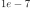 and GKRule = G3K7. Note that the default parametrisation of theGaussKronrodclass leads to a more precise evaluation of the integral but the cost is greater. It is recommended to increase the order of the quadratic rule and the number of sub intervals if the integrand or one of the bound functions is smooth but with many oscillations.
- univariateQuadrature
Notes
This class enables to approximate the following integral:
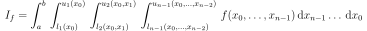
with 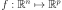, 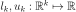 and 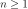. For 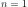, there is no bound functions 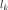 and 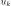.
Examples
Create an iterated quadrature algorithm:
>>> import openturns as ot >>> import math as m >>> a = -m.pi >>> b = m.pi >>> f = ot.SymbolicFunction(['x', 'y'], ['1+cos(x)*sin(y)']) >>> l = [ot.SymbolicFunction(['x'], [' 2+cos(x)'])] >>> u = [ot.SymbolicFunction(['x'], ['-2-cos(x)'])]
Draw the graph of the integrand and the bounds:
>>> g = ot.Graph('Integration nodes', 'x', 'y', True, 'topright') >>> g.add(f.draw([a,a],[b,b])) >>> curve = l[0].draw(a, b).getDrawable(0) >>> curve.setLineWidth(2) >>> curve.setColor('red') >>> g.add(curve) >>> curve = u[0].draw(a, b).getDrawable(0) >>> curve.setLineWidth(2) >>> curve.setColor('red') >>> g.add(curve)
Evaluate the integral with high precision:
>>> Iref = ot.IteratedQuadrature(ot.GaussKronrod(100000, 1e-13, ot.GaussKronrodRule(ot.GaussKronrodRule.G11K23))).integrate(f, a, b, l, u)
Evaluate the integral with the default GaussKronrod algorithm, and get evaluation points:
>>> f = ot.MemoizeFunction(f) >>> I1 = ot.IteratedQuadrature(ot.GaussKronrod()).integrate(f, a, b, l, u) >>> sample1 = f.getInputHistory() >>> print(I1) [-25.132...] >>> n_evals = sample1.getSize() >>> print(n_evals) 2116 >>> err = abs(100.0*(1.0-I1[0]/Iref[0])) >>> print(err) 2.2...e-14 >>> cloud = ot.Cloud(sample1) >>> cloud.setPointStyle('fcircle') >>> cloud.setColor('green') >>> g.add(cloud) >>> f.clearHistory()
Evaluate the integral with the default IteratedQuadrature algorithm:
>>> I2 = ot.IteratedQuadrature().integrate(f, a, b, l, u) >>> sample2 = f.getInputHistory() >>> print(I2) [-25.132...] >>> n_evals = sample2.getSize() >>> print(n_evals) 5236 >>> err = abs(100.0*(1.0-I2[0]/Iref[0])) >>> print(err) 4.6...e-10 >>> cloud = ot.Cloud(sample2) >>> cloud.setPointStyle('fcircle') >>> cloud.setColor('gold') >>> g.add(cloud)
Methods
Accessor to the object's name.
getId()Accessor to the object's id.
getName()Accessor to the object's name.
Accessor to the object's shadowed id.
Accessor to the object's visibility state.
hasName()Test if the object is named.
Test if the object has a distinguishable name.
integrate(*args)Evaluation of the integral of
 on a domain.
on a domain.setName(name)Accessor to the object's name.
setShadowedId(id)Accessor to the object's shadowed id.
setVisibility(visible)Accessor to the object's visibility state.
- __init__(*args)¶
- getClassName()¶
Accessor to the object’s name.
- Returns
- class_namestr
The object class name (object.__class__.__name__).
- getId()¶
Accessor to the object’s id.
- Returns
- idint
Internal unique identifier.
- getName()¶
Accessor to the object’s name.
- Returns
- namestr
The name of the object.
- getShadowedId()¶
Accessor to the object’s shadowed id.
- Returns
- idint
Internal unique identifier.
- getVisibility()¶
Accessor to the object’s visibility state.
- Returns
- visiblebool
Visibility flag.
- hasName()¶
Test if the object is named.
- Returns
- hasNamebool
True if the name is not empty.
- hasVisibleName()¶
Test if the object has a distinguishable name.
- Returns
- hasVisibleNamebool
True if the name is not empty and not the default one.
- integrate(*args)¶
Evaluation of the integral of
on a domain.- Available usages:
integrate(f, interval)
integrate(f, a, b, lowerBoundFunctions, upperBoundFunctions)
- Parameters
- f
Function, The integrand function.
- interval
Interval, 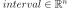 The integration domain.
- a,bfloat
Bounds of the integration interval of the first scalar input

- lowerBoundFunctions, upperBoundFunctionslist of
Function List of
 functions 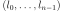 and 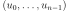 where defining the integration domain as defined above.
The bound functions can cross each other.
functions 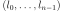 and 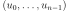 where defining the integration domain as defined above.
The bound functions can cross each other.
- f
- Returns
- value
Point Approximation of the integral.
- value
- setName(name)¶
Accessor to the object’s name.
- Parameters
- namestr
The name of the object.
- setShadowedId(id)¶
Accessor to the object’s shadowed id.
- Parameters
- idint
Internal unique identifier.
- setVisibility(visible)¶
Accessor to the object’s visibility state.
- Parameters
- visiblebool
Visibility flag.